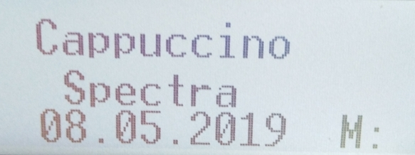
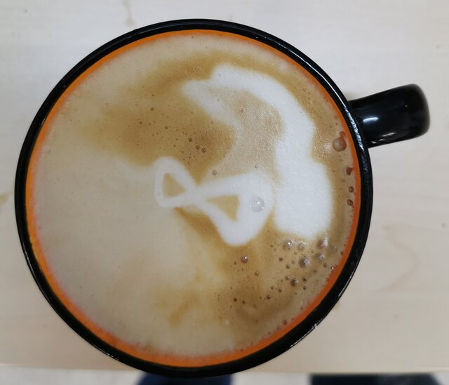

Cappuccino spectra

This is joint work with the local coffee machine. We apply techniques from Coffeology to create generalized cohomology theories. Until now the homotopy groups of the Cappuccino spectra are unknown.

Lately people conducted extensive studies of Cappuccino ∞-categories. A sketch of the construction can be seen on the right. The details are omitted due to the complicated nature of the construction.